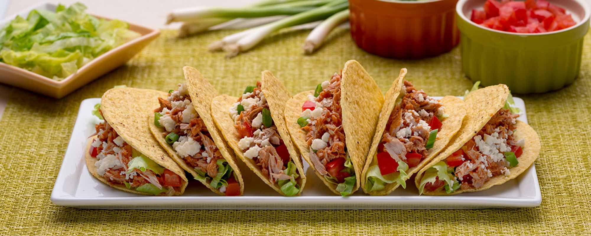

Best Ever Taco Recipe

What goes into making the best tacos?
This is a homemade recipe, crafted by a taco artisan with years of experience behind the line.
By closely following this recipe, you can ensure that Tuesdays will be the highlight of your week for the forseeable future.
Ingredients
- 1lb ground beef
- 2tbs chili powder
- 1 1/2tbs cumin
- 1/2 diced yellow onion
- 1tbs garlic powder
- 2tsp cayenne pepper
Steps
- Dice the onion and saute under medium heat for 5 minutes.
- Brown beef in pan with onions.
- Add seasonings and bring to boil while stirring. Reduce to simmer, stirring occasionally.
- Prepare taco shells, add-ons, and sides!
- Enjoy your delicious homemade tacos!